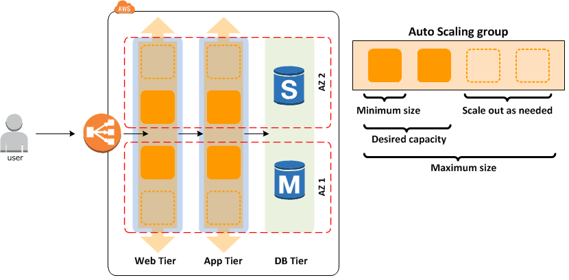

AWS High Availability & Fault Tolerance of the applications using aws EC2 auto scaling and ELB.
{kind=link}
Step 1: To create a auto scaling group, Go to auto scaling group tab on EC2 console and Click Create Auto Scaling group.

Step 2: Here you can see the Step 1 and Step 2, first need to create launch configuration and then create a Auto Scaling group using launch configuration. Click Start.
Note: Launch configuration is that specifies the type of EC2 instance such as AMI ID, instance type,EBS,SG,key paire.

Step 3: Choose the AMI.

Step 4: Choose Instance type. Click Next

Step 5: Setup the configuration details such as Name,Role and user data. Click Next

Step 6: Click Next.

Step 7: Choose the Security Group based your requirement, as of now I opened all the ports and Click Review.

Step 8: You can review and Click Create Launch Configuration.

Step 9: Choose the Key Pair and Click Create Launch Configuration to create it.

Step 10: Now you can create a Auto Scaling group using this launch configuration.

Step 11: Provide the configuration details such as group name, number of instances and network configurations.

Step 12: Under the Advanced Details we can choose the Load Balancer if you needed. Click Next.

Step 13: To Configure scaling policies, select the second options to detailed policies and you can mention the initial and maximum size of group and click Add new alerm.

Step 14: We can configure the alerm based on our requirement. Click Create Alerm.

Step 15: Once configured the Scaling policies Click Next to configure the notifications.

Step 16: As per the below screenshot we can configure the notification emails whenever instances are failed or stopped or terminated. Click Next.

Step 17: You can give the tags and Click Review.

Step 18: Review and Create Auto Scaling group.

Step 19: Click View your autos caling groups.

Step 20: See the below Auto Scaling Group has been created and you can find the details, etc. and instance will be launching.

Step 21: Go to Instances tab and find it as MyASG instance is currently running.

Step 22: Go to load balancer tab on EC2 console and Copy the DNS name(URL) and past in your browser.

Step 23: Make sure the URL is working fine.